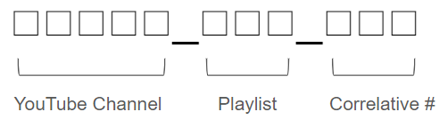

Rlues for Dataset
Criteria for Picking Videos
- Video length | minimum: 5min, maximum: 20mins
- Resolution | 720p is the minimum, 1080p is ideal. 4k is okay.
- There must be at least 80% hand writing over typeface.
- There must be at least one change of content. The hand-written content should be erased at least once.
- Fixed camera. No Zoom In/Out. (Slight zoom in/out for focusing is okay)
- Video with "Create Commons License" is preferred.
- Keep balance between white and chalk boards.
- Pick up to 2-4 videos from one YouTube channel to keep the randomization.
- There is no language limitation.
Video Naming
Example: 00005_002_009, 00005_011_010. Both videos are in same YouTube channel, and different playlist.
⚠ These video samples will be used only for non-profit research. Do not re-upload these videos or monetize the video samples. ⚠